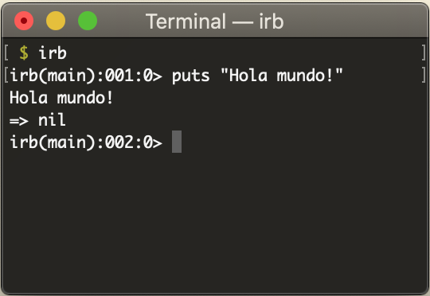

Introducción a Ruby Ruby Es un lenguaje de programación interpretado, de alto nivel, orientado a objetos, creado por el programador japonés Yukihiro "Matz" Matsumoto La sintaxis lo hace fácil de leer y escribir. Matz ha dicho que Ruby está diseñado para la productividad y la diversión del desarrollador Instalando Ruby Windows: RubyInstaller Linux/Mac: rbenv o RVM Guia paso a paso $ ruby -v Ruby 2.6.3 rbenv rbenv permite utilizar distintas versiones de ruby en una misma máquina (~nvm) ruby-build se encarga de compilar ruby desde el código fuente Alternativa: RVM Ruby Version Manager Ventas y desventajas Características del lenguaje Similitudes y diferencias con otros lenguajes https://www.ruby-lang.org/en/documentation/ruby-from-other-languages/ Características del lenguaje Todo es un Objecto Todo devuelve un valor Iterar colecciones: each > for Convenciones de nombres: empty?, reverse! La "verdad" universal Todas las classes son abiertas Symbols: :id Keyword arguments (ruby 2.0+) Missing methods Características del lenguaje La memoria es administrada mediante un Garbage Collector Ruby es dinámicamente tipado (no hace falta declarar variables) Los objetos son fuertemente tipados (to_s, to_i) Hay manejo de excepciones Hay métodos públicos/privados/protegidos Todos los atributos de clase son privados Se puede evaluar código dinámicamente mediente eval Hay interpolación de strings Cuenta con una Standard Library Consola IRB REPL o "Read-Eval-Print-Loop" Plan B => https://ruby.github.io/TryRuby/  Ejercicio def hi(name = "World") puts "Hello #{name.capitalize}!" end Fuente: Ruby quickstart class Student attr_reader :name def initialize name @name = name @languajes = [] end def learn languaje @languajes << languaje end def say_hi if @languajes.empty? puts "I'm #{@name}, and I want to learn programming" else puts "I'm #{@name}, and I like #{@languajes.join(', ')}" end end def rubyist? @languajes.include? 'ruby' end end s = Student.new 'Joaquin' s.learn 'php' s.learn 'ruby' s.say_hi Documentación Core API https://ruby-doc.org/core-2.6.3/ StdLib (*) https://ruby-doc.org/stdlib-2.6.3/ Variables y tipos básicos String Array Hash Numeric (Integer, Float, BigDecimal*, Rational, Complex) Variables y tipos básicos Booleans (TrueClass, FalseClass) NilClass Symbol Time, Date*, DateTime* Range Struct, OpenStruct* Regexp => https://rubular.com/ Clases y objetos Object Class Module Kernel Otras cosas útiles File/Dir Comparable Enumerable Ejercicio Programar un "e-commerce" que nos permita administrar los items de un inventario y cargar órdenes de compra. Los items del inventario contienen código, nombre, precio y cantidad. Las órdenes de compra deben poder mostrar el detalle de todos los items que la componen y el precio final (con y sin IVA) El inventario debe permitir agregar items nuevos. La orden de compra se tiene que poder imprimir. Después de concretar una venta, hay que actualizar el inventario Al final del día se quiere listar un resumen de los items vendidos y la facturación total